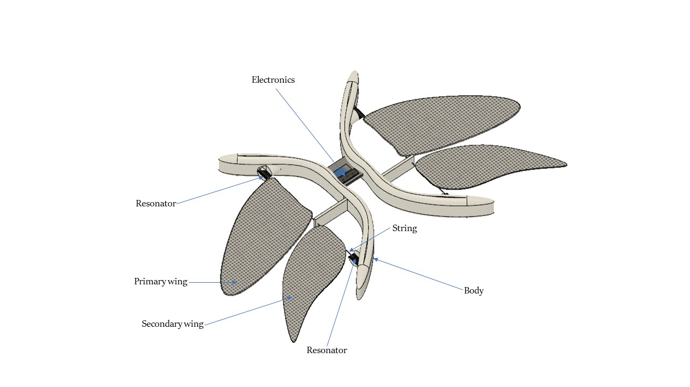
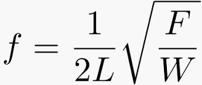
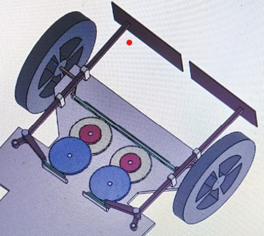
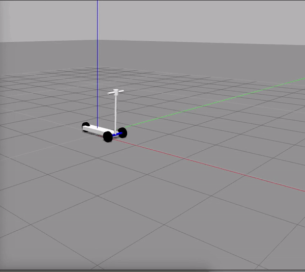
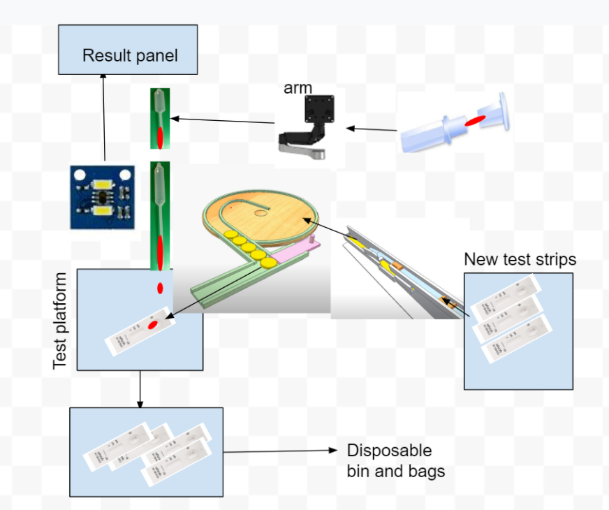
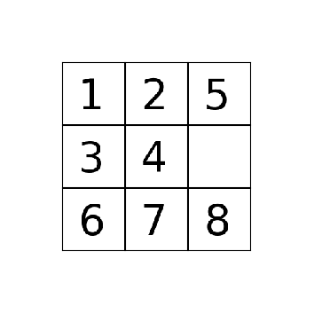

Projects
This is a showcase of some of my projects.
PickIt Up

This project leveraged the use of OMPL (Open Motion Planning Library) and Move it. The manipulator should exchange the positions of the red and the white block placed on two tables avoiding an obstacle wall. This is carried out by motion interface tool in rviz. Using the toggle, the end effector of the robot is places at appropriate position in space and waypoint is obtained. Once all the waypoints are collected the path planning is executed using the OMPL library in rviz (A ROS based visualization tool) and then the entire trajectory is simulated with real life physics in Gazebo. Code for the project can be found on the github link.
Acoustcally Powered InSect (APIS)

The word APIS is the scientific name for honeybee. Insect flight, to an avid viewer appears to be much convoluted. The mechanics these insect uses are difficult to decipher. In sects such as honey bees, butterflies, dragonflies make use of extremely complicated wing motions and aerodynamics to steer themselves with agility. Mimicking the natural model used by these insects and birds to construct micro robots becomes still more convoluted due to unavailability of very small actuators. Even if these actuators are made customarily, the control of wing movements mounted on these actuators is hard. A large number of factors come into play when a dragonfly swooshes through its environment. A dragonfly has four wings connected to the muscles and each of which could be controlled independently. It consists of a pair of wings on each side: a front wing and a hind wing. A dragonfly uses time phase difference between the flapping of its front wings and hind wings to perform motions such as hovering, forward motion, backward motion and agile turning motion. Recent advances in the field of bio robotics has led to the development of actuating methods which use electromagnetic waves [1], pressure waves [2], piezoelectric oscillators [3]. In this paper, the concept of development of an acoustic actuator is discussed. In musical instruments such as guitar, violin; melodies are produced when a string is plucked or vibrated appropriately. Each string based on its length, tension which acts on it and linear density has a resonant mode of frequencies. When the string is vibrated with one of the values. of frequency matched by one of its mode, the string begins to vibrate violently with high amplitudes. In contrast to that, a resonator generating sound waves could be used to vibrate stings. This mechanical vibration of string due to resonance effect can be utilized for controlled robot motion. Thus, this motion would actuate extremely minute mechanisms.
Every object in this universe, depending upon its mass and spring (elastic) constant possess a set of value of natural frequencies. When the object is vibrated externally with these values of frequencies, the object vibrates with a very high amplitudes, this behaviour of an object is termed as Resonance.
The primary part of actuator are the resonators and the string. When signal from the micro-controller is provided to the resonators, the resonators vibrate. This vibration causes the strings to vibrate. The natural modes of frequency of the string depends upon the type of its material (density), tension and length. When the resonator is vibrated with a frequency corresponding to the first mode of vibration of string, the amplitude of vibration increases and resonance occurs. This vibrational energy can be used for doing work. A honey bee (Apis Mallifera) is an agile flyer flapping its wings about 200 times /second. The figure shown above is a honey bee robot ‘APIS’. Like a real bee, this robot possesses two pairs of wings on each side: A primary wing and a secondary wing. When the resonators are vibrated with the fundamental harmonic frequency resonance occurs. This high amplitude vibration vibrates the wings in sync and as a result thrust is generated.
VR-OAS (Venus Rover Obstacle Avoidance System)
The proposed design is fully mechanical and can be divided into two modules. These modules are the Obstacle avoidance module and Hole/Valley/slope detection module. The description for each can be given as follows. Obstacle Avoidance Module Construction: The obstacle avoidance module consists of three push rods or pins. Out of the three pins, two pins (Pl and Pr) are used for the detection of the obstacle to the left and the right of the rover respectively. The third pin (Pc) which is mounted on the center is extended slightly forward in comparison to the two pins (A and B) is used when the obstacle obstructs the path of the rover from the center. The other ends of the pins Pl and Pr are connected with a cranks and connecting rods of the toggle mechanism. The connecting rod at the end are connected to racks (Rl and Rr) The racks R1 and R2 are in mesh with the gears G1 and G2. These gears are in mesh with a compound gear system Ga and Gb which in turn are in mesh with the main rack R. The ends of this rack are in mounted with bell crank levers (L1 and L2) the other joints of which are connected with the wheels of the rover. Pin Pc is mounted with some eccentricity on the gear Ge which is in mesh with the rack R. Working: When the path of the rover is obstructed from the right, the right pin Pr gets pressed. This push on the pin actuates the toggle mechanism which in turn moves the rack Rr horizontally. Thus making the gears to rotate. The rotation of the gear would move the rack R and thus this would help the wheel to steer because of the moment of the bell crank lever. Similar event happens when the path of the rover is obstructed from the left and the left link is pressed. When the path of the rover is obstructed from the center. The extended pin Pc gets pressed. This pin Pc rotates the gear Ge and thus the rack R which is in mesh with the gear Ge moves. The motion of the rack moves helps to steer the wheel. Now as the obstacle is detected, the rover would move in the reverse direction and the mechanism would help the vehicle to turn. This will generate a combined reverse + turning motion bringing the vehicle away from the obstacles and finding new path forward. Hole/Valley/ Slope detection module. Mechanism for the detection of Holes/ valleys, In order to detect holes and valleys having depths greater than 0.35 meters we are proposing a simple suspended pendulum mechanism. This mechanism consists of an elastic thread at the end of which a pendulum is mounted. The length of the thread is slightly more than 0.35 meters. As a result when the rover moves ahead the pendulum bob would just freely slide with the ground keeping the thread loose. When the hole or valley having a depth more than 0.35 meters is encountered the pendulum would itself move down and the string would get tensed. The other end of the thread is connected with the link which triggers an indication link on the rover. Mechanism for the detection of the slope greater than 30 degree In order to indicate the slope greater than thirty degrees a pendulum is used. The pendulum is freely suspended, so when the rover moves uphill or downhill on the slope, the chassis of the rover becomes parallel to the slope and so the rod of the pendulum have a relative motion with respect to the chassis and as a result angle of the slope can be indicated. When the slope is thirty degree or more a link gets pressed.
Autonomous Electric Scooter
Autonomous electric scooter is a research project on which I am working as a part of my research at the University of Maryland under the supervision of Dr. Derek Paley

COVID Testing Robot

We propose a rapid coronavirus testing robot
The blood test is called Rapid antibody test. (RET)
It works as follows,
Test using blood
The device can be interpreted as a box.
In the box there is a hole, the finger of the patient is inserted in the hole.
The hole consists of a syringe which pricks the finger and there is also a suction tube which takes in the blood drop. The suction tube goes inside the internal chamber using an automated arm. The arm also pinches the suction tube which lets the blood drop out of the tube.
The blood drop falls on the covid test strip.
Now a vision camera or a color sensor just above the strip constantly monitors the strip change.
The color change on the strip surface is detected by the computer vision algorithm and based on that the patient being positive or negative can be identified.
Database system
Now, before the test, the patient has to enter the name and all the details along with the home address in the system (robot) (voice recognition)
Once the test is complete. The results get automatically forwarded on the database management system over the cloud. So the government officials can get the information about the positive cases classified wrt. The region and gender and other factors and statistical mapping becomes easy.
Another advantage is maximum tests can be carried out if such an automated robot is deployed at every corner of the street.
In addition to that healthcare workers should not have to take the toil and dangers of working under such pressures of getting infected with the virus.
Doctor` Advice
Once the machine gives the result, the result can also be shared with the family doctor and doctor can prescribe appropriate medications.
Along with that the society can also benefit, as people in the surroundings and in the community can know that a virus infected person is living nearby or in their area.
Other potential ideas
Use Ultra violet rays for sanitization of the plate.
How are they disposing pet suits?
Lucas Kanade Motion Tracker
Link to the code

The intention of the project is to develop a pipeline to implement the Lucas-Kanade TemplateTracker. To develop and test the tracker three data sets have been provided. These data sets consists ofindividual frames and for each data set a different object needs to be tracked.The first step,is to develop a template image which would basically consist of a bounding box around theregion of interest(ROI) that needs to be tracked. Since there are 3 different data sets, 3 templates have tobe developed.The ROI for the data sets were extracted through the a custom function that used thecv2.EVENT LBUT-TONDOWNfunction, which uses mouse clicks around the intended area to get the coordinates of the pointsin order to extract the ROI. For easier visualization of the ROI a rectangle is drawn around it using theopencv built in functioncv2.Rectanglearound the ROI of the data sets.
8 Puzzle Solver using Breadth First Search Algorithm
Link to the code
Algorithms are a set of unambiguous instructions used to solve a problem and get the required output. Breadth first Search algorithm is used when a graph or a tree is to be traversed or searched. It begins at the root node and goes in the depth of a tree to search for the solution. 8 puzzle problem can be solved using this algorithms as each specific consecutive step of the empty tile in the grid generates a graph.
Micromobility Dataset

Machine Learning algorithms for object detection in Self Driving vehicles use massive data set of labelled images for training and testing. There has been a rapid development in the self driving car industry which has resulted in the development of a variety of dataset for the detection of more and more objects on the roads. Some of the widely used open source datasets are :
(1) Berkeley Deep Drive
(2) Lyft Level 5
(3) NuScenes Dataset
(4) Panda Set
(5) Waymo Open Dataset
These dataset are a combination of many different combinations of weather, traffic, and pedestrians, along with longer-term changes such as construction and roadworks.
Micromobility vehicles are these new class of electric vehicles which are micro in the sense that they are used for travelling upto a small distance by a single person.
These vehicles are extremely fast. The datasets listed above, do not include data for these kind of vehicles. So, when they are used to train an object detection module of a self driving vehicle
they do not get trained to identify such vehicles.
Now a self driving car is trained to detect pedestrians and these micromobility vehicles have shape factor similar to that of a pedestrians and so they identify these vehicles as pedestrians.
Project in progress....